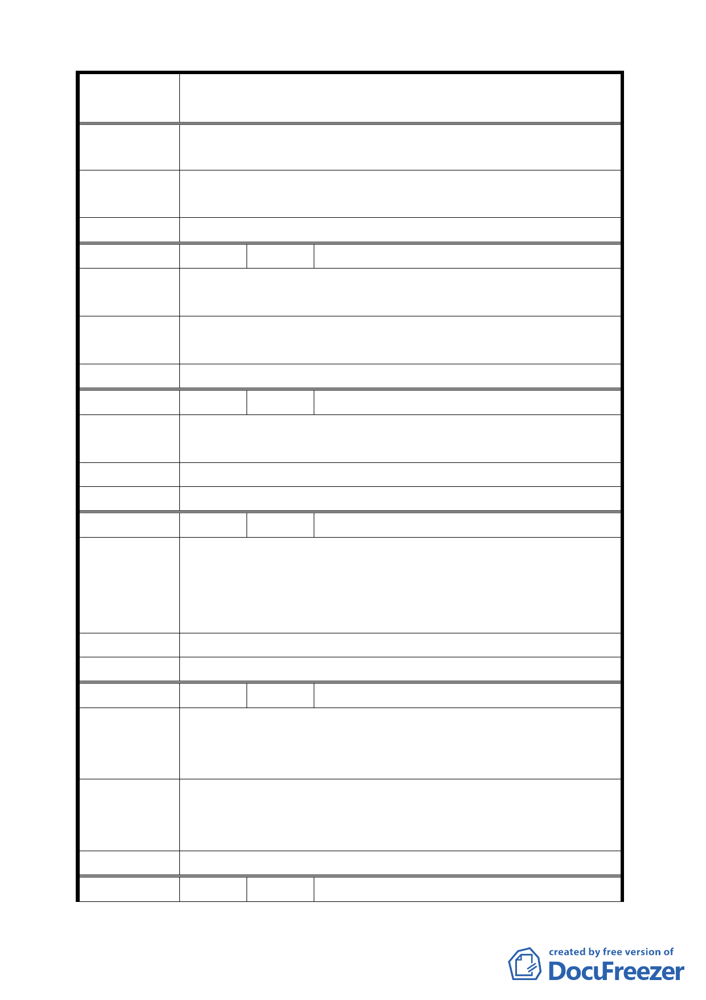

案
名
變更臺北市士林區至善段五小段 80、81、117 地號等加油站
用地為公園用地細部計畫案
陳 情 理 由 附近可供居民與遊客休憩的大型公園仍嫌不足。
建議辦法
與至德園一同規劃，園內多蓋涼亭，樹蔭下多設椅凳，園藝
請專家用心設計，祈能與故宮有所適配。
委 員 會 決 議 同編號 2。
編 號 38 陳情人 吳慈祥
陳 情 理 由 贊成公園設立，希望有多一點運動設備，不要只是種花種樹
而已。
建議辦法
安全又可健身的設備，可以吸引更多人使用，不要只是一個
養蚊子的場所。
委 員 會 決 議 同編號 2。
編 號 39 陳情人 張偉珠
陳情理由
希望蓋個親子公園，讓大人小孩都有一個可以放心休憩的場
所。
建 議 辦 法 可請專業人士規劃設計。
委 員 會 決 議 同編號 2。
編 號 40 陳情人 羅怡婷
贊成蓋公園。
希望結合志德園延續延展延長到馬路邊，讓民眾感覺此地有
陳 情 理 由 公園在，可以有休憩的地方。荷花季節更要讓市民知道公園
內有美麗的荷花園，才能創造故宮瑰寶大道之整體意象。
建 議 辦 法 種樹遮陽，設置實用又大方的座椅。
委 員 會 決 議 同編號 2。
編 號 41 陳情人 李承志
贊成蓋公園，目前至德公園環境美化很好，但很少人進入，
陳 情 理 由 可比照北市其他公園，建遊樂設施及運動設施以吸引民眾進
入遊玩，順便欣賞公園美麗景觀。
1.和其他公園一樣，建多用途孩童遊樂設施及鞦韆。
建 議 辦 法 2.建大眾都可使用的單雙槓、籃球架。
3.種樹遮陽，設置座椅乘涼休息。
委 員 會 決 議 同編號 2。
編 號 42 陳情人 黃海丰、謝計程
47